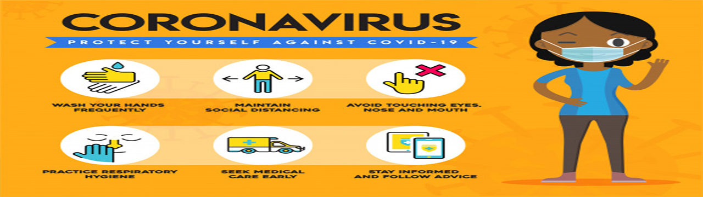
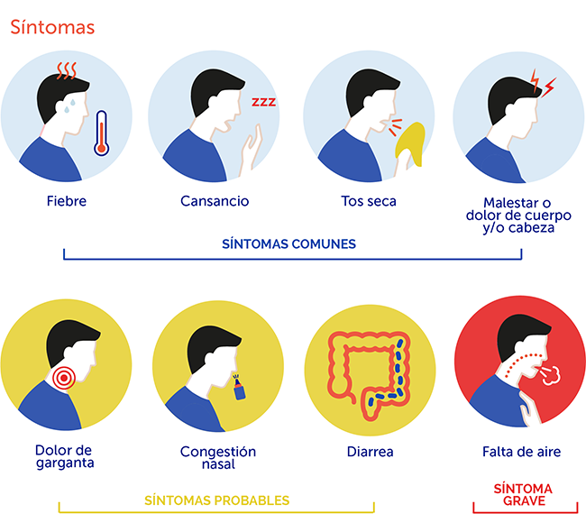
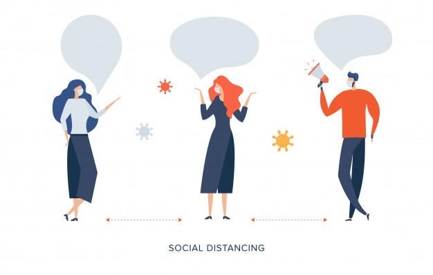

<main role="main">

    <div class="container">
      <div class="card" style="background-color: #6DDDFE;">
        <div class="card-body m-3">
          <div class="row text-center" style="margin-top: 20px;background-color: #142b3b;">
            <div class="col-12"><h1 style="color: #5ebcfa; font-style: italic;"> <b> Bienvenido </b></h1></div> 
            
        </div>
        </div>
      </div>
      <hr>
      <div class="row">
        <div class="col-12 text-center">
            <h1 style="color: #142b3b; font-style: italic;">Sistema de Rastreo de Riesgos por Positivos Covid-19</h1>
        </div>
    </div>
    <hr>
      <div class="row mt-3">
        <div class="col-lg-4 text-center">
          
          <h2>Registro de presencia en zonas públicas</h2>
          <div class="text-justify"><p>
            A través de tu localizacón via GPS, realiza el registro de tu presencia en cierta zona pública.
          </p></div>
          
          <p><a class="btn btn-secondary" [routerLink]="['/log_coord']" role="button">Realizar registro &raquo;</a></p>
        </div>
        <div class="col-lg-4 text-center">
          
          <h2>Aviso de estado de riesgo</h2>
          <div class="text-justify">
          <p>Ve la situación del estado de riesgo de acuerdo a las zonas que has visitado</p>
        </div>
          <p><a class="btn btn-secondary" href="#" role="button">ver&raquo;</a></p>
        </div>
        <div class="col-lg-4 text-center">
          
          <h2>Rastreo Personal- Botón de emergencia</h2>
          <div class="text-justify">
          <p>Realiza el registro para indicar el nivel de riesgo en el que te encuentras (Identificado por Sector salud)</p>
        </div>
          <p><a class="btn btn-secondary" [routerLink]="['/semaforo']" role="button">Emergencia &raquo;</a></p>
        </div>
      </div>

      <div id="myCarousel" class="carousel slide" data-ride="carousel">
        <ol class="carousel-indicators">
          <li data-target="#myCarousel" data-slide-to="0" class="active"></li>
          <li data-target="#myCarousel" data-slide-to="1"></li>
          <li data-target="#myCarousel" data-slide-to="2"></li>
        </ol>
        <div class="carousel-inner">
          <div class="carousel-item active">
            
            <div class="container">
              <div class="carousel-caption text-left">
                <h1>Organización Mundial de la salud (ONU)</h1>
                <p><a class="btn btn-lg btn-primary" target="_blank" href="https://www.who.int/es" role="button">Ir a la página</a></p>
              </div>
            </div>
          </div>
          <div class="carousel-item">
            
            <div class="container">
              <div class="carousel-caption">
                <h1>Protegete, Protegenos</h1>
              </div>
            </div>
          </div>
          <div class="carousel-item">
            
            <div class="container">
              <div class="carousel-caption text-right">
              </div>
            </div>
          </div>
        </div>
        <a class="carousel-control-prev" href="#myCarousel" role="button" data-slide="prev">
          <span class="carousel-control-prev-icon" aria-hidden="true"></span>
          <span class="sr-only">Previous</span>
        </a>
        <a class="carousel-control-next" href="#myCarousel" role="button" data-slide="next">
          <span class="carousel-control-next-icon" aria-hidden="true"></span>
          <span class="sr-only">Next</span>
        </a>
      </div>
     

      <hr class="featurette-divider">

      <div class="row featurette">
        <div class="col-md-7">
          <h2 class="featurette-heading">¿Qué es un coronavirus?<span class="text-muted"> Coronavirus</span></h2>
          <p class="lead">Los coronavirus son una extensa familia de virus que pueden causar enfermedades tanto en animales como en humanos. En los humanos, se sabe que varios coronavirus causan infecciones respiratorias que pueden ir desde el resfriado común hasta enfermedades más graves como el síndrome respiratorio de Oriente Medio (MERS) y el síndrome respiratorio agudo severo (SRAS). El coronavirus que se ha descubierto más recientemente causa la enfermedad por coronavirus COVID-19.</p>
        </div>
        <div class="col-md-5">
          
        </div>
      </div>

      <hr class="featurette-divider">

      <div class="row featurette">
        <div class="col-md-7 order-md-2">
          <h2 class="featurette-heading">¿Cuáles son los síntomas de la COVID-19? <span class="text-muted">Te presentamos los sintomas a continuación</span></h2>
          <p class="lead">Los síntomas más habituales de la COVID-19 son la fiebre, la tos seca y el cansancio. Otros síntomas menos frecuentes que afectan a algunos pacientes son los dolores y molestias, la congestión nasal, el dolor de cabeza, la conjuntivitis, el dolor de garganta, la diarrea, la pérdida del gusto o el olfato y las erupciones cutáneas o cambios de color en los dedos de las manos o los pies. Estos síntomas suelen ser leves y comienzan gradualmente. Algunas de las personas infectadas solo presentan síntomas levísimos.

            La mayoría de las personas (alrededor del 80%) se recuperan de la enfermedad sin necesidad de tratamiento hospitalario. Alrededor de 1 de cada 5 personas que contraen la COVID‑19 acaba presentando un cuadro grave y experimenta dificultades para respirar.  </p>
        </div>
        <div class="col-md-5 order-md-1">
          
        </div>
      </div>

      <hr class="featurette-divider">

      <div class="row featurette">
        <div class="col-md-7">
          <h2 class="featurette-heading">¿Cómo se propaga la COVID‑19? <span class="text-muted"></span></h2>
          <p class="lead">Una persona puede contraer la COVID‑19 por contacto con otra que esté infectada por el virus. La enfermedad se propaga principalmente de persona a persona a través de las gotículas que salen despedidas de la nariz o la boca de una persona infectada al toser, estornudar o hablar. Estas gotículas son relativamente pesadas, no llegan muy lejos y caen rápidamente al suelo. Una persona puede contraer la COVID‑19 si inhala las gotículas procedentes de una persona infectada por el virus.</p>
        </div>
        <div class="col-md-5">
          
        </div>
      </div>

      <hr class="featurette-divider">

    </div>

  </main>